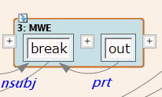
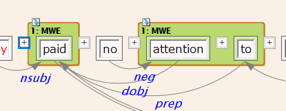
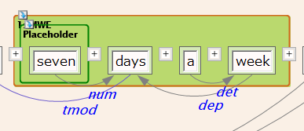
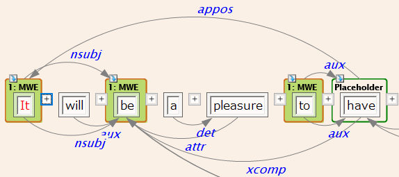

複合語アノテーションをエクスポートする
複合語(MWE)アノテーションを施したコーパスから、複合語を一括してエクスポートすることができます。 エクスポートはCONLL形式で1複合語が1文に対応する形となります。
複合語アノテーションを持つコーパスを選択（カレント）状態にし、 メインメニューより、"辞書" - "MWEエクスポート" をクリックします。
エクスポート先のファイルを指定するダイアログが開きますので、エクスポート先となる CONLLファイルを指定します（既存のファイルを選んだ場合その内容は上書きされます）。
MWEのアノテーションとエクスポート結果のCONLL形式の間には、次に説明するような関係があります。
Case 1 "単一のGroupで構成されるMWE"

語群がMWEと認識される最小の条件は、"MWE" Groupに属することです。この例では、1つの"MWE" Groupで MWEが完結しています。Groupは1つの"MWE" Segmentから成っており、その中には"break", "out"の2語が 含まれています。2語の間の関係としては、文節間係り受けラベルの"prt"が使用されます。 （CONLLから作成したコーパスでは、単語間にDependencyを張るために各単語に仮の「文節」を1つずつ アサインしており、その結果、単語間のDependencyは文節間係り受けラベルで表現されます。）
この例に対するCONLL形式は次の通りです。
1 break break VB VB _ 0 _ _ _ 2 out out RP RP _ 1 prt _ _
Case 2 "複数のGroupで構成されるMWE"

MWEが連続した語群でない場合、各語群を”MWE" Segmentとし、それらを一つの"MWE" Groupとする アノテーションが使用できます。DependencyのラベルはCase 1と同じようにアサインされます。
この例に対するCONLL形式は次の通りです。
1 paid paid VB VBD _ 0 _ _ _ 2 attention attention NN NN _ 1 dobj _ _ 3 to to P TO _ 1 prep _ _
Case 3 "Placeholderを持つMWE"

MWEの一部に可変の単語を含むMWEでは、可変部分を"Placeholder"としてアノテーションすることにより 指定することができます。Placeholderは、以下の2通りの作成方法があります。
- MWE Groupに属するMWE Segmentに、"POS" attributeを追加する。 Placeholderは、表層の文字列によらずその部分の品詞が何であるかを指定することにより可変要素とすることが ほとんどであるため、最も簡便なこの方法が提供されています。
- "Placeholder" Segmentを作成する。 "Placeholder" Segmentは"MWE" Groupに属する必要はありませんが、MWE範囲の内側に存在するか、 MWEに属するSegmentからPlaceholder Segmentへの明示的なLinkによるDependencyがなければなりません。 この場合も、"POS" attributeは同様にPlaceholder部分の品詞として解釈されます。 上図は後者の方法を示しており、Placeholder ("seven")はMWEの内部に存在するためにこのMWEの一部として認識されます。
この例に対するCONLL形式は次の通りです。
1 * * CD CD _ 2 num _ _ 2 days days NN NNS _ 0 _ _ _ 3 a a DT DT _ 4 det _ _ 4 week week NN NN _ 2 dep _ _
MWEに属するSegmentからPlaceholder Segmentの明示的なLinkを用いる例を下図に示します。

この例に対するCONLL形式は次の通りです。
1 It It PR PRP _ 2 nsubj _ _ 2 be be VB VB _ 0 _ _ _ 3 to to INF TO _ 4 aux _ _ 4 * * VB VB _ 0 _ _ _
Placeholderの表層形・基本形は"*"と出力されます。PlaceholderのSegment属性として"POS"が与えられている場合、 その値はPlaceholderのPart of speechの場所に出力されます。
Case 4 "Segment間のLinkを使用したMWE内部Dependency"
上の例では主に単語間のDependency(仮の「文節」間の係り受け)がエクスポートされていましたが、 MWE Segmentを単語単位で付加し、それらの間にLinkを付与することにより、 単語のDependencyとは異なるDependencyを表現することも可能です。（辞書からMWEを自動付与した場合は この方式が使用されます。）Linkによる直接的なアノテーションがもし存在する場合は、単語間のDependencyよりも 優先して用いられます。

この例に対するCONLL形式は次の通りです。
1 It It PR PRP _ 2 nsubj _ _ 2 be be VB VB _ 0 _ _ _ 3 to to INF TO _ 4 aux _ _ 4 * * VB VB _ 1 appos _ _